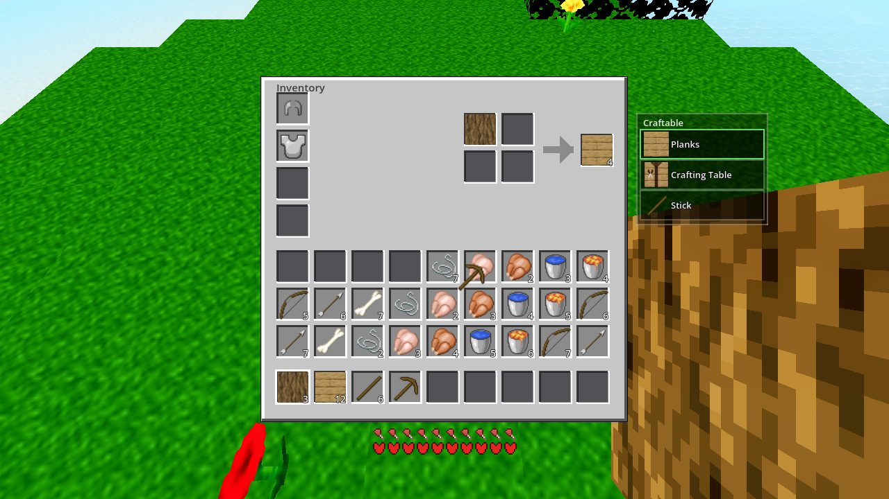

# godot/autoload/data.gd — appended after the arrow entry (:118), before the closing ] :
{"in": {106: 1, 100: 1}, "grid": 2, "out": {"id": 22, "n": 4}},
# godot/scenes/main.gd — probe arms Tneg/T1/T2/T3/T4 appended to _craft_test()
# after arm F's close_inventory(), before Debug.result(...) — see plan §5.4.
Form: shapeless, grid 2 — placement-independent, so the required vertical C-over-S placement works in both the 2×2 E grid (gs = 2) and the 3×3 table (gs = 3; the matcher skips only when r.grid > grid_size, data.gd:367). No shaped variant needed (a shaped entry is grid 3 ⇒ table-only and would fail in the E grid). Append-safe: no existing entry references item 106 in any input (plan §5.3) ⇒ no first-match shadowing either direction.
AWECRAFT_LOGIC=craft — standalone, BATTSKIP mode)RESULT {"armor":{"armor":[0,0,0,0],"points":0},"data":{"A_grid":[[8,1],[8,1],[8,1],[100,1]],"A_hot_planks":0,"A_inv9":[8,4],"A_out":[0,0],"A_vis_planks":4,"B_filled":0,"B_grid0":[6,1],"B_logs":5,"B_out":[111,1],"B_out_pre":[8,4],"B_pick":1,"C1_inv8":[12,3],"C1_inv9":[0,0],"C2_inv0":[0,0],"C2_inv9":[5,7],"C_out":[8,4],"D0_held":[2,5],"D0_inv35":[0,0],"D1_hot4":[2,5],"D2_held":[0,0],"D2_hot4":[0,0],"D2_inv35":[2,5],"D_dirt":5,"D_out_inv":[0,0],"D_out_table":[109,1],"D_sword":1,"E_drops":3,"E_logs":0,"E_planks":4,"F_aim":[true,20],"F_cell":20,"F_held":[1,5],"F_mode":"table","T1_grid":[[106,1],[0,0],[100,1],[0,0]],"T1_out":[0,0],"T1_torch":0,"T2_filled":3,"T2_out":[0,0],"T2_torch":0,"T3_filled":2,"T3_out":[0,0],"T3_torch":0,"T4_arrow":4,"T4_grid":[[0,0],[0,0],[0,0],[0,0]],"T4_out":[143,4],"Tneg_out":[0,0],"armor_head":127,"armor_swap":[131,127,2],"armor_uneq":[0,131],"close_grid0":0,"close_ui":"","held_r1":[6,1],"held_return":[0,6],"logs_a":1,"logs_b":0,"logs_start":2,"out_a":[8,4],"out_b":[8,4],"out_c":[100,4],"out_nomatch":[0,0],"planks_a":4,"planks_b":8,"planks_c":6,"planks_close":5,"points_head":1,"sticks_c":4},"inv":{"armor":[0,0,0,0],"craft_grid":[],"craft_out":{},"held":{},"points":0,"sel":0,"slots":[{"i":0,"id":106,"n":1},{"i":1,"id":100,"n":1},{"i":2,"id":143,"n":4}],"table_grid":[]},"ok":false}
PRE as predicted: ok:false; T1/T2/T3 out [0,0] (no torch recipe), Tneg [0,0], T4 [143,4] with 4 arrows (regression already green pre-fix); T2_filled 3 / T3_filled 2 are the unconsumed inputs left in the grids (nothing crafted); every PRE-EXISTING key (out_a…F_mode) = the old-arms baseline, unchanged.
RESULT {"armor":{"armor":[0,0,0,0],"points":0},"data":{"A_grid":[[8,1],[8,1],[8,1],[100,1]],"A_hot_planks":0,"A_inv9":[8,4],"A_out":[0,0],"A_vis_planks":4,"B_filled":0,"B_grid0":[6,1],"B_logs":5,"B_out":[111,1],"B_out_pre":[8,4],"B_pick":1,"C1_inv8":[12,3],"C1_inv9":[0,0],"C2_inv0":[0,0],"C2_inv9":[5,7],"C_out":[8,4],"D0_held":[2,5],"D0_inv35":[0,0],"D1_hot4":[2,5],"D2_held":[0,0],"D2_hot4":[0,0],"D2_inv35":[2,5],"D_dirt":5,"D_out_inv":[0,0],"D_out_table":[109,1],"D_sword":1,"E_drops":3,"E_logs":0,"E_planks":4,"F_aim":[true,20],"F_cell":20,"F_held":[1,5],"F_mode":"table","T1_grid":[[0,0],[0,0],[0,0],[0,0]],"T1_out":[22,4],"T1_torch":4,"T2_filled":0,"T2_out":[22,4],"T2_torch":8,"T3_filled":0,"T3_out":[22,4],"T3_torch":12,"T4_arrow":4,"T4_grid":[[0,0],[0,0],[0,0],[0,0]],"T4_out":[143,4],"Tneg_out":[0,0],"armor_head":127,"armor_swap":[131,127,2],"armor_uneq":[0,131],"close_grid0":0,"close_ui":"","held_r1":[6,1],"held_return":[0,6],"logs_a":1,"logs_b":0,"logs_start":2,"out_a":[8,4],"out_b":[8,4],"out_c":[100,4],"out_nomatch":[0,0],"planks_a":4,"planks_b":8,"planks_c":6,"planks_close":5,"points_head":1,"sticks_c":4},"inv":{"armor":[0,0,0,0],"craft_grid":[],"craft_out":{},"held":{},"points":0,"sel":0,"slots":[{"i":0,"id":22,"n":12},{"i":1,"id":143,"n":4}],"table_grid":[]},"ok":true}
| field | PRE | POST | expected | verdict |
|---|---|---|---|---|
Tneg_out (single coal alone) | [0,0] | [0,0] | [0,0] | PASS — exact-count: no single-coal recipe |
T1_out (E vertical C-over-S) | [0,0] | [22,4] | [22,4] | PASS |
T1_torch / T1_grid | 0 / inputs kept | 4 / all [0,0] | 4 / drained | PASS — both input cells drained (1 − 4 ≤ 0) |
T2_out (E horizontal) | [0,0] | [22,4] | [22,4] | PASS — placement independence |
T2_torch / T2_filled | 0 / 3 | 8 / 0 | 8 / 0 | PASS — cumulative, grid drained |
T3_out (table vertical C-over-S) | [0,0] | [22,4] | [22,4] | PASS — the "grid:2 reaches the 3×3 table" proof |
T3_torch / T3_filled | 0 / 2 | 12 / 0 | 12 / 0 | PASS — cumulative, table drained |
T4_out (regression 9+100→143×4) | [143,4] | [143,4] | [143,4] | PASS — green pre-fix AND post-fix (no shadowing) |
T4_arrow / T4_grid | 4 / drained | 4 / drained | 4 / drained | PASS |
every pre-existing r key (out_a…F_mode) | identical PRE vs POST (byte-compare of both data dicts) | old-arms baseline | PASS | |
ok | false | true | false → true | PASS — honest A/B |
| gate | result |
|---|---|
G0 PRE (--headless --quit) | RC 0, 0 SCRIPT ERROR |
| G0 POST | RC 0, 0 SCRIPT ERROR |
| G1 probe PRE / POST | RC 0 / RC 0, 0 SCRIPT ERROR each; ok:false → ok:true; every T-* per §5.4 (§2.3) |
SMOKE AWECRAFT_BATTERY=player;interact;light;genhash | combined ok:true (total_ms 65346 incl. resets); player horizontal_moved 2.82 / is_on_floor true / jump_peak_y 36.43; interact drop_spawned true / place_ok true / breakable_id 2 / after_place_cell 2; light surface_eff 15 / cave_eff 0 / torch_level 14 / torch_far_after 9 — all EXACT vs HARNESS §3 known-stable |
| genhash arm | 25/25 GENHASH lines, BYTE-IDENTICAL to the last verified run (.scratch/AC-0035/genhash.log) — expected: recipe lists are read only by the matchers + recipe-list UI, never by world gen |
| RENDER (≤1) | one R=1 AWECRAFT_INV=1 shot (7 s, RC 0, 0 SCRIPT ERROR, RESULT m4:ok 1280×720). The existing hook (main.gd:1386) also writes the _placed autofill variant — two PNGs from the single call, both below. The AWECRAFT_INV hook was NOT extended (fence): it seeds logs/planks/sticks, not coal+stick — the behavioral proof is the probe RESULT. |
| Heavy tier | NOT run by the builder (coordinator's background job): genhash independent re-run + ./build_windows.sh + 8080/5180 curls. No boundary/perf/flake — scope touches no world/*|lighting.gd. |
Scratch logs: .scratch/AC-0132/ (g0_pre/post.log, probe_pre/post.log, smoke.log, render.log, genhash_ac0132.txt). Wall times: G0 ~2 s each, probe ~2 s each, battery 66 s, render 7 s — all far inside budget (no craft-mode creep, plan §7 risk 4).
_placed variant (hook autofill, main.gd:1386)
{"in": {9: 1, 100: 1}, "grid": 2, "out": {"id": 143, "n": 4}} is in the shapeless list (data.gd:118; index.html:273), grid:2 ⇒ both grids. T4 is coded against the correct ids and is green pre- and post-fix.No Charcoal item exists: the items dict (data.gd:46-94) spans 100-147 with no such entry, and the blocks dict (1-25) has none either (23 = Glowstone, 24 = Lava). Spec says "charcoal variant if present" ⇒ skip. The MC-wiki charcoal variant is uncraftable here for lack of the item, not by omission.
match_shapeless requires the input multiset to match EXACTLY (data.gd:370-378 = web :296-300): "2 coal + 1 stick" does NOT match the torch recipe (extras break it) — Tneg guards the single-item side, and the matcher's no-extras check covers the rest. This is the frozen web's behavior, ported faithfully.
Crafting subtracts out.n from EVERY non-empty grid cell (player.gd:1541-1546): a 1-coal + 1-stick grid of stacks n=1 each is fully drained (1 − 4 ≤ 0 each). Had a stack held >4, the excess would be consumed per craft. Pre-existing behavior, out of scope, unchanged by this task (T1_grid/T4_grid drained as expected).
The Godot tables are a FULL 1:1 port of the frozen web — 22/22 shapeless (data.gd:97-118 vs index.html:252-273, identical ids/counts) and 14/14 shaped (data.gd:121-135 vs index.html:276-289). Godot's grid/grid3 fields are port-side extensions implementing the MC-style 2×2 E grid (the frozen web shows 9 slots in both UIs, filters by no size). The frozen web itself has no torch recipe (no out.id 22 in either table — verified by full read) ⇒ this is a user-directed addition (deviation class ii), Minecraft-wiki canonical (coal + stick, shapeless, 4 torches, minecraft.wiki/w/Torch). After this task Godot has 23 vs 22 shapeless — the single addition; documented in the task registry only (index.html is NEVER modified).
Changed files: godot/autoload/data.gd (1 line), godot/scenes/main.gd (probe arms only, existing mode) + task deliverables. No UI changes (plan §2), no other godot/ files, index.html untouched, no world/*|lighting.gd, no git (coordinator commits after heavy gates). git status --short = the two in-scope .gd edits + tasks/AC-0132/ (+ the foreign untracked docs/halo-loot-brainstorm.html — NOT touched, NOT mine).
Results authored by Run-2 (builder, 2026-08-28). PRE/POST RESULT lines are verbatim from .scratch/AC-0132/probe_{pre,post}.log.